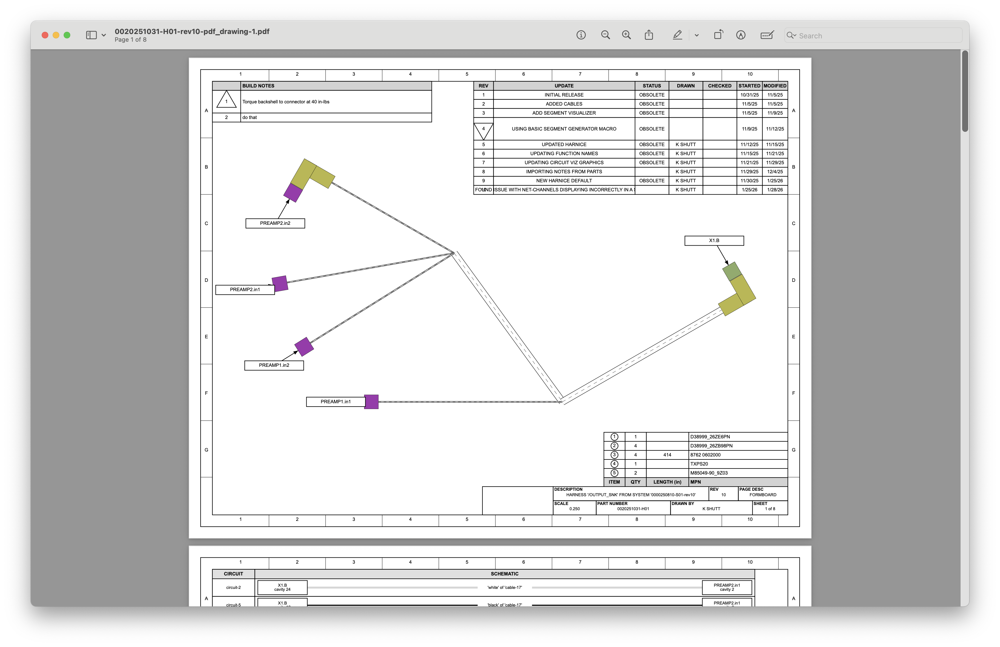
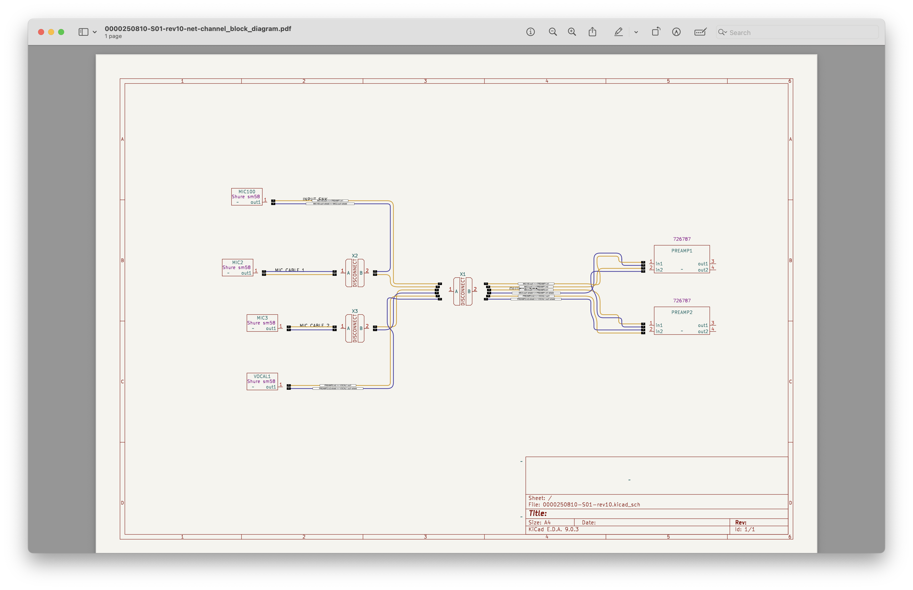

Welcome to Harnice
Harnice is a Python-based, electrical system CAD package.
It designs harnesses for you... and does so much more... nicely!
THIS PROJECT IS A WORK-IN PROGRESS! ONLINE DOCS HAVE A LONG WAY TO GO, AND THE CODE IS UNDER CONTINUOUS DEVELOPMENT.
Links
Download on pip: pip install harnice
Visit the repo: github.com/harnice/harnice
Submit bugs, feature requests: new issue
Send me an email: harnice.io@gmail.com
What's the elevator pitch?
Let's face it: designing harnessing sucks. Managing how your devices talk to each other in one software, and building stuff against that in another is terrible. Calculating voltage drops, naming stuff, keeping track of device interface configurations, software input lists, is almost always done manually, in error-prone, expensive, clunky, contradictory, time-wasting ways.
...not anymore!!!
I developed Harnice because it's time for something new. We, the people, deserve better. Harnice is my attempt to consolidate all electrical-system related design tasks into one comprehensive, full-featured, free, open-source tool, built for everyone.
With Harnice, you can consolidate all your electrical design problems into consistent, infinitely configurable, reusable data structures, where you can define what you need. From there, the software can help you derive any imaginable output directly from your design content.
How does it work?
Harnice was developed with one goal in mind:
delete redundant sources of truth in your electrical system definition.
As a system designer, your time is most valuably spent thinking about exactly what you want, not how to actually implement it.
If your electrical system can be implemented by simple logic statements, Harnice can help you record those design intents as rules, then compile them against libraries of devices and COTS items that you're trying to use, and give you one fully compiled solution to your system.
What's the workflow?
-
Record how your devices work in a standardized, consolidated format.
-
Define which devices you want physically connected to which other devices.
-
Define your build rules, checks, part selections, channel mapping, naming conventions, color preferences, and more, in simple Python.
-
Run
python3 harnice -rin your command line to render all outputs.
What do you get?
- Professional, complete, and beautiful multi-page PDF harness build drawings, derived from your system definition, and ready for manufacture 
- System-wide graphic channel or wire map renderings 
- Bills of materials derived from your system definition, including your cable lengths

- Full electrical system behavior simulation (in work)
- Complete reports on how to provision your involved devices for your use case (in work)
Can it do what I need?
Probably! But if not, Harnice supports Macros, which are Python files that can be configured to do anything. There's a macro start file written in docs, plus there's plenty of documentation on existing Harnice functions to get you started.
What doesn't Harnice do?
-
Harnice is not intended to make engineering decisions for you. This is a platform that lets you use your brain to focus on the hard stuff, while the computers produce a determinite, predictable output of the rules you've defined.
-
Harnice is currenlty set up to link as-intended systems to as-designed. It does not yet have the ability to track as-built.
-
Harnice does not read your mind. If you are receiving results that you don't expect (unless it's a bug), you may need to rethink how you are communicating or organizing your thought process. This is a feature! Complete, explicit definition makes your designs easier to understand by both humans and machines alike.
-
Harnice doesn't have an easy way of definining parts yet. A barrier to entry for competitive packages is that libraries do not always come pre-defined. Harnice does not yet have a magical solution to this problem either. I see a future where you can upload a datasheet and AI can magically turn that into an object that Harnice can parse, but we're not there yet.
How much does it cost?
Free, fully free, forever and always. I made this tool because I never wanted to design harnesses manually ever again, and this is as much FOR YOU as much as it is for me. Go build cool stuff, don't waste your time doing automatable things, and as always, feel free to contribute if you can.
Who am I?
My name is Kenyon, I'm an electrical engineer by training and by day job. I have no background in programming. This is my first python projec ever, so please forgive any beginner mistakes you might find. I'm always open to feedback, I love to learn, and I love to be outside!